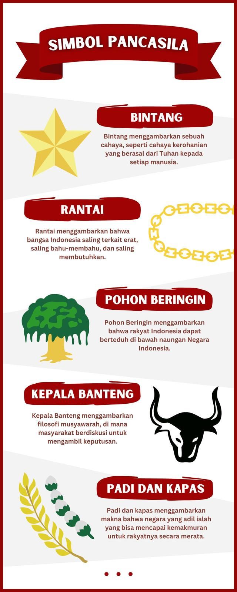

Apa itu Pancasila?
Pancasila adalah dasar negara Indonesia. Pancasila terdiri dari 5 sila. Setiap sila mempunyai bunyi dan simbol yang berbeda.

Bunyi: Ketuhanan Yang Maha Esa
Simbol: ⭐ Bintang
Makna sederhana: Kita percaya kepada Tuhan dan menghormati orang lain yang berbeda agama.
Contoh: Berdoa sebelum belajar, rajin beribadah, menghormati teman yang sedang beribadah, tidak memaksakan agama kepada orang lain.
Bunyi: Kemanusiaan yang Adil dan Beradab
Simbol: ⛓️ Rantai
Makna sederhana: Kita harus memperlakukan orang lain dengan baik, adil, sopan, dan penuh kasih sayang.
Contoh: Menolong teman yang kesulitan, tidak mengejek teman, bersikap sopan, menghargai orang lain.
Bunyi: Persatuan Indonesia
Simbol: 🌳 Pohon Beringin
Makna sederhana: Kita harus menjaga persatuan dan kerukunan walaupun berbeda suku, agama, bahasa, atau daerah.
Contoh: Berteman dengan siapa saja, bekerja sama, tidak membeda-bedakan teman, menjaga kerukunan di sekolah.
Bunyi: Kerakyatan yang Dipimpin oleh Hikmat Kebijaksanaan dalam Permusyawaratan/Perwakilan
Simbol: 🐂 Kepala Banteng
Makna sederhana: Kita menyelesaikan masalah dengan musyawarah dan menghargai pendapat orang lain.
Contoh: Berdiskusi ketika memilih ketua kelas, mendengarkan pendapat teman, tidak memaksakan kehendak, menerima keputusan bersama.
Bunyi: Keadilan Sosial bagi Seluruh Rakyat Indonesia
Simbol: 🌾 Padi dan Kapas
Makna sederhana: Kita harus bersikap adil dan menghargai hak orang lain.
Contoh: Membagi tugas secara adil, berbagi dengan teman, tidak mengambil hak orang lain, memperlakukan semua teman dengan adil.
Urutannya:
⭐ Bintang → ⛓️ Rantai → 🌳 Beringin → 🐂 Banteng → 🌾 Padi & Kapas
Agar lebih mudah, ingat kata kunci setiap sila:
| Sila | Kata Kunci | Contoh Sederhana |
|---|---|---|
| 1 | Tuhan | Beribadah dan menghormati agama lain |
| 2 | Manusia | Menolong dan menghargai sesama |
| 3 | Persatuan | Rukun walaupun berbeda |
| 4 | Musyawarah | Berdiskusi dan menghargai keputusan |
| 5 | Keadilan | Bersikap adil dan berbagi |
⭐ Sila 1 → Tuhan: "Aku beriman dan menghormati orang lain."
⛓️ Sila 2 → Manusia: "Aku menyayangi dan menghargai sesama."
🌳 Sila 3 → Persatuan: "Walaupun berbeda, kita tetap bersatu."
🐂 Sila 4 → Musyawarah: "Kita berdiskusi untuk mengambil keputusan bersama."
🌾 Sila 5 → Keadilan: "Aku bersikap adil kepada semua orang."